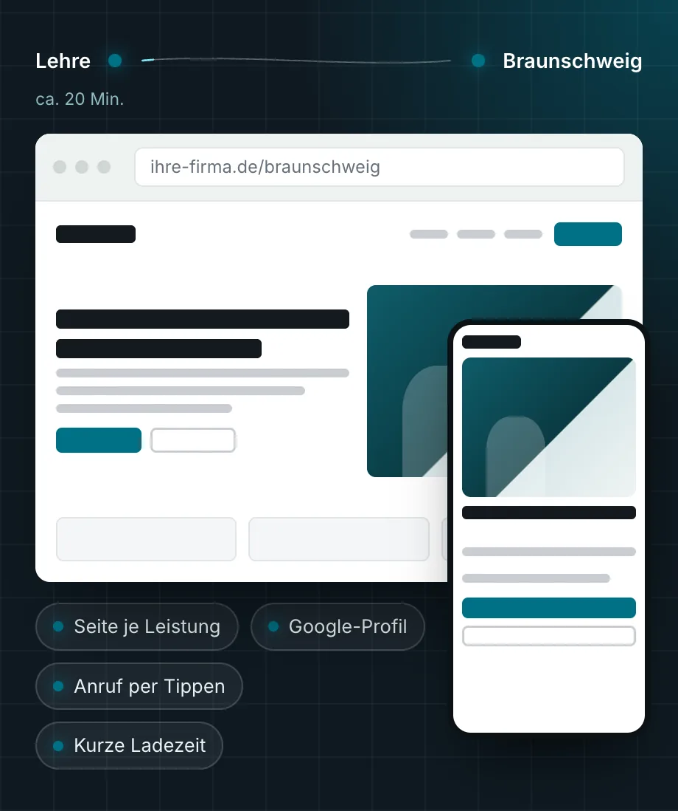

Webdesign Braunschweig: Websites für Betriebe, die vor Ort gefunden werden wollen.
Wir bauen Websites für Betriebe in Braunschweig. Jede wichtige Leistung bekommt eine eigene Seite, Ihr Google-Profil passt dazu, und auf dem Handy erreichen Kunden Sie mit einem Tippen. Zum Erstgespräch kommen wir aus Lehre zu Ihnen.
- ca. 20 Min.
- von Lehre zu Ihnen nach Braunschweig
- Festpreis
- nach dem Erstgespräch
- Seit 2002
- IT-Systemhaus in Lehre
Webdesign in Braunschweig fängt bei der Suche Ihrer Kunden an
Wer in Braunschweig einen Elektriker, eine Steuerberatung oder eine Werkstatt sucht, tippt oft die Leistung und den Ortsnamen bei Google ein, nicht selten unterwegs auf dem Handy. Bei solchen Suchen zeigt Google häufig eine Karte mit Unternehmensprofilen und darunter die passenden Websites. Wer an beiden Stellen fehlt, bekommt diesen Anruf nicht.
Für einen Betrieb in der Stadt heißt das dreierlei. Erstens braucht jede Leistung, mit der Sie Aufträge gewinnen wollen, eine eigene Seite, die zur Suche passt, etwa „Heizungsbau Braunschweig“. Zweitens gehören Website und Google-Unternehmensprofil zusammen: gleicher Name, gleiche Adresse, gleiche Telefonnummer, und das Profil verweist auf die passende Seite. Drittens muss der Kontakt auf dem Handy sofort gehen, per Anruf oder mit einem kurzen Formular.
Ein ansprechendes Design ist dabei die Grundlage, nicht das Ziel. Am Ende zählt, ob aus einem Besuch auf Ihrer Seite eine Anfrage wird.
Was zu Ihrer Website für Braunschweig gehört
Eine Seite je Leistung
Für jede Leistung, die Sie verkaufen, gibt es eine eigene Seite mit Ablauf, Einsatzgebiet und häufigen Fragen. So passt die Seite zu dem, was jemand sucht.
Google-Profil eingebunden
Wir richten Ihr Google-Unternehmensprofil ein oder bringen es in Ordnung und verknüpfen es mit der Website. Name, Adresse und Telefonnummer stimmen überall überein.
Zuerst für das Handy geplant
Jede Seite entsteht zuerst für den kleinen Bildschirm. Die Telefonnummer lässt sich antippen, das Formular fragt nur, was wir für einen Rückruf brauchen.
Texte aus dem Gespräch mit Ihnen
Die Texte schreiben wir nach einem Gespräch mit Ihnen, nicht aus Vorlagen. Bevor etwas online geht, lesen Sie jede Seite und geben sie frei.
Schnell und sauber gebaut
Die Seiten laden schnell, sind klar gegliedert und enthalten strukturierte Daten und eine Sitemap. So kann Google sie lesen und dem richtigen Ort zuordnen.
Betrieb aus einer Hand
Domain, Hosting, Zertifikat, Postfächer und Datensicherung übernehmen wir auf Wunsch gleich mit. Dafür haben Sie einen Ansprechpartner in Lehre.
Wie eine Seite für Leistung und Ort funktioniert
Wer „Website erstellen lassen Braunschweig“ oder „Dachdecker Braunschweig“ sucht, will einen Anbieter in der Stadt. Die Seite muss das erkennbar beantworten.
Bei Suchen mit Ortsnamen haben Seiten gute Chancen, die genau diese Leistung an genau diesem Ort behandeln. Eine lokale Seite ist deshalb keine Kopie der Startseite mit ausgetauschtem Stadtnamen. Sie beschreibt die Leistung, nennt das Einsatzgebiet, zeigt den Ablauf und beantwortet die Fragen, die Kunden vor einer Anfrage stellen. Sie ist mit Ihrer Leistungsseite und mit dem Google-Profil verbunden.
Solche Seiten bauen wir nur für Orte, in denen Sie tatsächlich arbeiten. Eine Seite für eine Stadt, die Sie nie anfahren, bringt höchstens Anfragen, die Sie absagen müssen.
Eine Seite für alles
- Alle Leistungen in einem Text auf der Startseite
- Braunschweig steht nur im Impressum
- Kein Bezug zum Google-Profil
- Telefonnummer erst am Ende der Seite
Eine Seite je Leistung und Ort
- Die Überschrift nennt Leistung und Stadt
- Einsatzgebiet und Ablauf sind konkret beschrieben
- Das Google-Profil verweist auf die passende Seite
- Anruf und Formular sind auf jeder Seite erreichbar

So läuft Ihr Website-Projekt in Braunschweig ab
Das erste Gespräch führen wir gern bei Ihnen im Betrieb. Danach sehen Sie jeden Schritt in einer Vorschau.
Termin bei Ihnen
Wir kommen nach Braunschweig, lernen Ihren Betrieb kennen und klären, welche Leistungen Anfragen bringen sollen und wo Sie arbeiten.
Seitenplan und Festpreis
Sie erhalten schriftlich, welche Seiten entstehen, was das kostet und bis wann die Website steht.
Texte, Entwurf, Vorschau
Wir schreiben die Texte, gestalten die Seiten und schicken Ihnen einen Vorschau-Link. Ihre Anmerkungen arbeiten wir ein.
Online gehen
Alte Adressen werden weitergeleitet, Search Console und Google-Profil eingerichtet. Danach betreuen wir die Seite, wenn Sie möchten.
Termin in Braunschweig, betreut aus Lehre
Unser Sitz ist in der Berliner Straße 60 in Lehre. Nach Braunschweig sind es etwa 20 Minuten. Ein Termin bei Ihnen im Betrieb ist für uns deshalb kein großer Aufwand. Wir kommen überall in der Stadt hin, etwa in die Innenstadt, ins Östliche oder Westliche Ringgebiet, in die Weststadt, nach Lehndorf, Querum, Wenden, Veltenhof, Rüningen, Stöckheim oder Volkmarode.
Als IT-Systemhaus haben wir seit 2002 mehr als 500 Unternehmen betreut, die meisten mit 10 bis 250 Mitarbeitenden. Mehr als die Hälfte unserer Kunden ist seit über fünf Jahren bei uns. Liegt Ihre IT bereits bei uns, bleiben Website, Domain und Postfächer bei einem Ansprechpartner. Was wir in der Stadt sonst für Unternehmen tun, steht unter IT-Service Braunschweig.
Eine gut gebaute Website ist auch die Grundlage dafür, bei Google weiter oben zu stehen und in KI-Antworten genannt zu werden. Wenn Sie daran gezielt arbeiten möchten, finden Sie mehr unter SEO in Braunschweig und GEO-Optimierung.
Häufige Fragen zum Webdesign in Braunschweig
Was kostet es, in Braunschweig eine Website erstellen zu lassen?
Entscheidend sind die Zahl der Seiten, ob wir die Texte schreiben und ob Seiten für weitere Orte dazukommen. Webdesign läuft bei uns immer zum Festpreis. Sie bekommen ihn nach dem Erstgespräch schriftlich, bevor die Arbeit beginnt.
Kommen Sie für das Erstgespräch nach Braunschweig?
Ja. Von Lehre sind wir in etwa 20 Minuten bei Ihnen. Wenn Ihnen ein Videogespräch lieber ist, geht das genauso. Die weitere Abstimmung läuft über einen Vorschau-Link, den Sie jederzeit öffnen können.
Brauche ich für jeden Stadtteil eine eigene Seite?
In der Regel nicht. Für Braunschweig genügt meist eine Seite je Leistung. Eigene Seiten lohnen sich eher für weitere Orte, in denen Sie regelmäßig arbeiten, zum Beispiel Wolfenbüttel, Peine oder Salzgitter. Was in Ihrem Fall sinnvoll ist, klären wir im Erstgespräch anhand Ihres Einsatzgebiets.
Website oder Google-Profil: Was ist der Unterschied?
Das Profil ist Ihr Eintrag in Google Maps und in der Kartenansicht der Suche, mit Adresse, Öffnungszeiten und Bewertungen. Die Website erklärt Ihre Leistungen ausführlich. Beides sollte zusammenpassen und aufeinander verweisen. Auf Wunsch richten wir das Profil ein und verknüpfen es mit der Website.
Kann ich meine bisherige Domain und E-Mail-Adresse behalten?
In der Regel ja. Ihre Domain bleibt bei Ihnen, und bestehende E-Mail-Adressen laufen weiter. Wenn Sie möchten, ziehen wir Hosting und Postfächer zu uns um, auch in Microsoft 365.
Wie lange dauert es, bis die neue Website online ist?
Das hängt vom Umfang ab und davon, wie schnell Texte und Fotos freigegeben sind. Den Zeitplan halten wir im Angebot schriftlich fest, damit Sie wissen, woran Sie sind.
Passt oft dazu
Neue Website für Ihren Betrieb in Braunschweig? Wir kommen gern vorbei.
Schreiben Sie uns kurz, was Sie anbieten und wo Ihre Kunden sitzen. Wir melden uns zu unseren Geschäftszeiten und vereinbaren einen Termin bei Ihnen oder per Video.
- Telefon, Mo–Do 8:30–17:00 Uhr, Fr 8:30–15:30 Uhr05308 935030
- E-Mailinfo@stkom.de
- AdresseBerliner Straße 60, 38165 Lehre